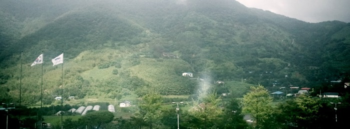

12월 31일은 2년 반 동안 다니던 삼성을 그만두는 날입니다.
그동안 재미있는 일도 많았고, 짜증 나는 일도 많았었는데
이 모든 것을 내려두고 이제 다시 삼성의 출입문에 사원증을 찍을 일이 없다는 것이 조금은 어색하게 느껴집니다.
이전의 퇴사하는 사람은 참 쉽게 그만두는 것처럼 보였는데
막상 제가 결심을 하기까지는 긴 시간이 필요했습니다.
과거 그만두던 사람들도 또한 속으로는 그러했겠죠.
남들이 하는 것은 쉬워 보여도 막상 제가 하려니 쉽지 않네요.
이것이 회사를 그만두는 것에만 국한되지는 않는 것 같습니다.
세상 모든 일이 다 그러하듯, 타인의 업적은 쉽게 성취한 것으로 보이고
내 업적은 갖은 노력을 다해서 얻어낸 것처럼 느껴집니다.
그러나 그 사람도 갖은 고생을 해가며, 밤새 머리를 긁적이며 고심하여 만들어낸 결과일 겁니다.
퇴사를 결심하게 된 이유는 여러 가지가 있지만 아무래도 가장 큰 이유는 작업환경입니다.
무계획일 것 같은 느낌을 주는 계획과 개발 중 급변하는 목표 성능 등 많은 부분이 체계적이지 못한 느낌을 받았습니다.
연구과제라는 이유로 말도 안 되는 성능 목표치와 일정을 잡고,
그 과제가 양산과제로 바뀌어도 결국 일정은 변하지 않았고,
일정을 지키기 위해 미처 발견하지 못했던 것으로 인해 성능이 떨어지자 비난은 개발한 당사자에게 향했습니다.
비록 프로젝트가 성공적으로 완료되고 시장에 좋은 평가를 받았지만,
그 과정이 제게는 전혀 체계적이지 않게 보였습니다.
삼성에서 일하는 동안 맘에 들지 않았던 것만은 아닙니다.
일하는 그 자체는 재미있었습니다.
새로운 제품을 설계하고 어떻게 성능을 높일지 토의하고 생각하고 구현하고 예측하고 결과를 보고 수정을 하는 과정에서 많이 배웠고 재미를 찾을 수 있었습니다.
그래서 삼성이 고맙기도 하고 안타깝기도 합니다.
위에서 말한 문제가 고쳐지기엔 긴 시간이 필요하기에 아쉬움을 접고 그만둘 결심을 하였습니다.
그러나 그 2년 반 동안 해왔던 일을 통해 제가 성장하였고 많은 경험을 쌓은 것은 정말 다행입니다.
적어도 헛된 시간은 보내지 않았으니까요.
앞으로 어떤 길이 있을지 알지 못하지만 그래도 삼성에서의 2년 반은 쉽게 잊지는 못할 겁니다.
